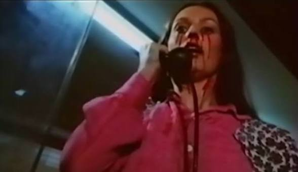

MURDER BY PHONE (1982) — CERTIFIED MGC G-3

🏛 MGC LOWER COURT OF APPEALS
- ASSET TITLE: Murder by Phone (1982) – The Official Re-Strike Ledger
- OFFICIAL REGISTRY GRADE: Certified MGC G-3 (Good / Heavily Circulated Scrap Alloy)
- LOWER COURT BENCH: Judge Tina, Chief of Cult Classics
- CASE FILE: #021
📜 THE FORENSIC NARRATIVE BREAKDOWN & RECOVERY
1. Severe Script Corrosion & Acoustic Circuit Overload
- Under a cold, disciplined forensic review, Murder by Phone (also circulated under the tracking names Bells or The Calling) exhibits massive material fatigue across its core concept framework. The film attempts to mint a high-concept thriller premise: a mad tech-killer who can instantaneously detonate human brains using a specialized acoustic frequency transmitted through standard telephone lines.
- While this setup carries immense historical cult luster for midnight-movie collectors, the execution suffers from catastrophic logic fragmentation. The baseline tracking mechanics completely collapse into pure camp hysteria because the screenplay fails to establish a consistent, unassailable rule system. We are asked to accept that standard analog electrical currents can liquefy organic cranial tissue through a cheap plastic desktop earpiece. Because it lacks any structural or technical explanation, this massive blemish permanently bars the asset from climbing into the high-end VF or XF registers.
2. Heavily Circulated Character Mechanics & Pacing Scuffs
- The narrative represents a heavily circulated, worn specimen displaying sharp pacing scuffs throughout the entire second act. Richard Chamberlain turns in a highly dedicated, elite professional performance as the environmental science professor tracking the frequency lines, but his character velocity is constantly stalled by generic Hollywood tropes.
- The structural layout locks into a repetitive, uncalibrated loop: the audience must sit through numerous, lengthy scenes of background characters simply staring blankly at ringing office phones before their faces explode into theatrical fake blood. This creates a severe narrative bottleneck, breaking the continuous linear gravity that a tight thriller requires.
3. The Definitive G-3 Junk Box Ledger Allocation
- Let the permanent base registry reflect the unvarnished reality: Murder by Phone sits securely inside our junk box tier, held back by noticeable technical leaks and considerable narrative wear. An amateur corporate grader would just throw this wreckage away, but a true MGC Judge refines the scrap metal to document the historical value hidden inside.
- The asset completely avoids slipping onto the PO-1 basal state floor thanks to its incredible, high-velocity 1980s atmospheric grit, a spectacular electronic synth score, and delightfully trashy, practical gore effects. It represents a classic, heavily circulated exploitation coin—completely flawed from a logical standpoint, but maintaining a solid, low-grade place on a midnight-movie collectors’ shelf.
⚖️ THE CHIEF’S FINAL DECREE
Tina slams her lower-court gavel down onto the steel desk with a sharp, resonant ring.
- Case closed.⚖️🔨 Certified MGC G-3

• © 2026 MOVIE GRADING CONSENSUS. All Sovereign Rights Reserved.